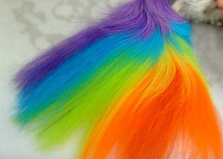
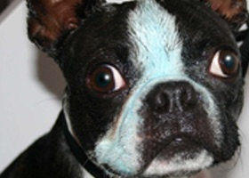
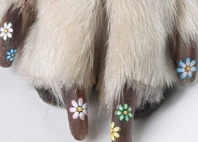
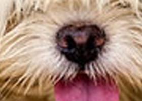
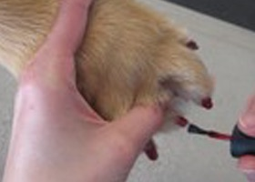
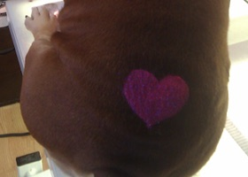
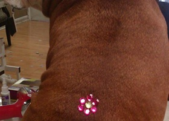
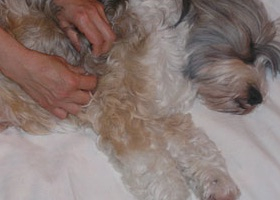
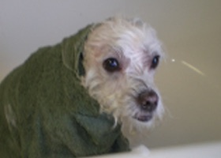

Bath only
from $20
Under 8 lbs to 65+ lbs, $20–$55.
- Ear cleaning & anal glands
- Deep-cleansing & color-enhancing shampoo
- Hand blow dry
Elizabethtown, Kentucky · Dogs & cats
Baths, haircuts and pampering for every size of pet, from extra-small to 65 lbs and up. Professional stylists, gentle handling, and walk-in nail trims with no appointment needed.



Why Pawsh
Pawsh specializes in professional pet grooming in Elizabethtown and the surrounding areas. Whether your dog needs a bath, a stylish haircut or a full grooming session, the goal is the same: a pet that looks and feels their best.
No appointment needed
Express services for in-between visits. Just stop by, but please arrive before 3 p.m. so we have help on hand if needed.
Grooming packages
from $20
Under 8 lbs to 65+ lbs, $20–$55.
from $25
Under 8 lbs to 65+ lbs, $25–$60.
from $55
Long hair, under 8 lbs to 65+ lbs, $55–$110.
from $40
Short coats $40–$75, long coats $50–$95.
Prices vary with temperament, size and weight, age and coat condition. Cat baths start at $60 and cat grooms at $100.
From the grooming table
Nail art, temporary hair chalk, permanent dye and the finishing touches that make pickup day fun.






Photos from Pawsh's own website archive.
“Pets are more than just pets… they are precious family members that deserve the very best.”— Pawsh Pet Salon & Spa
Our story
The idea for Pawsh came from the owner's love for animals, and from her Shih Tzu, Reese. In August 2007 Reese came close to losing his life. Waiting through his surgery, she decided life was too short to stay in a job that didn't make her happy.
She left teaching, trained at Nash Academy of Animal Arts and opened Pawsh in Elizabethtown, a salon built on the idea that every pet should go home looking great and feeling relaxed.
Pawsh supports rescue. Since 2009 Pawsh has donated grooming makeovers to pets taken into rescue with Hardin County Animal Control, to help them find a home.
Happy customers
My babies love coming there. When we lost our Lucy we got a card in the mail from the staff. We have been customers for over 7 yrs now and will continue to use them.
Best service you can get. My Beau and Coco come home looking like show dogs. Friendly staff, very professional service. Trust them completely with my babies.
Pawsh Pet is the fastest, best and most affordable nail trim around! My little dogs used to be traumatized with nail trims. Mighty would cry and fight the whole time. He doesn't make a peep at Pawsh.
Daisy looked like a princess and was treated like royalty at Pawsh Pet Salon and Spa! She was very cute and loved the birthday hat and cupcake squeaky toy.
I was really nervous taking him because I honestly didn't know how he would do, but the moment I walked in the door, they met me with a soothing tone and reassured me that he would be well taken care of, and he definitely was!
My dog Snoopy looked really good after his grooming at Pawsh. I was concerned about the price but it was actually less than I had been paying. They are so professional and the people are very friendly.
Reviews as published on Pawsh's own website.
Good to know
A few house rules that keep every guest safe, calm and on schedule.
Visit us
| Monday | 7:00 AM – 4:00 PM |
| Tuesday | 7:00 AM – 4:00 PM |
| Wednesday | 7:00 AM – 4:00 PM |
| Thursday | 7:00 AM – 4:00 PM |
| Friday | 7:00 AM – 4:00 PM |
| Saturday | 8:00 AM – 3:00 PM |
| Sunday | Closed |